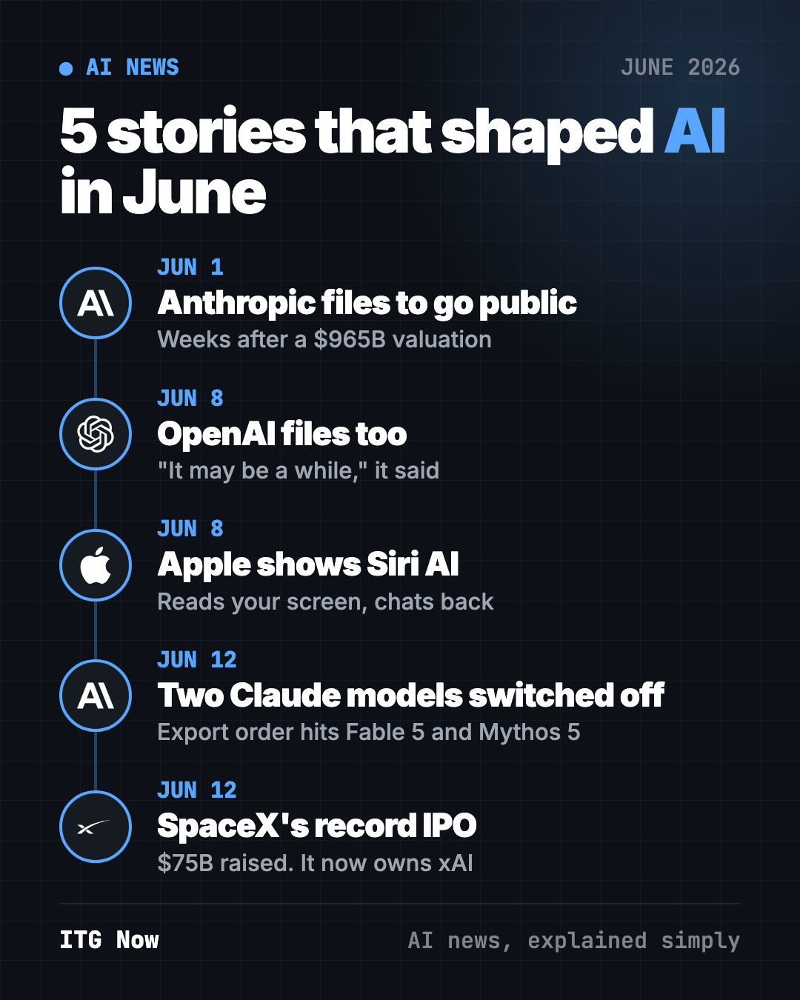
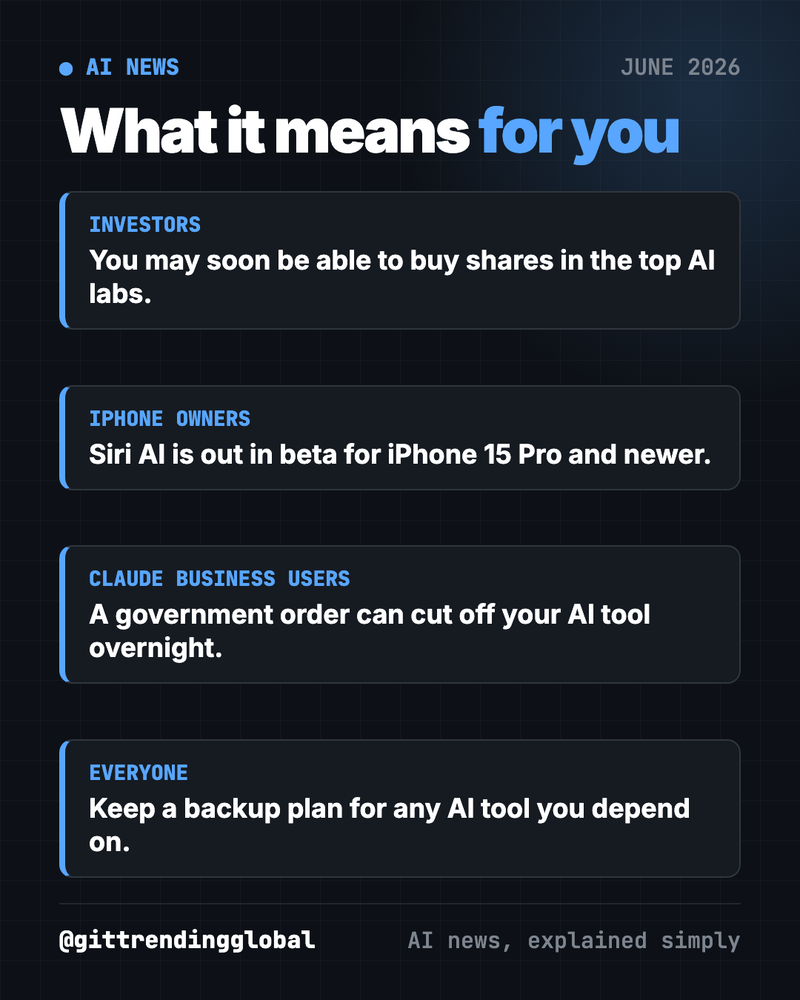

AI News June 2026: AI Labs Line Up for Wall Street
- AI news
- Published 2026-10-15
- 9 min read
- Updated 2026-10-16
- By the It's Trending Global team
AI news June 2026: Anthropic and OpenAI file to go public, SpaceX has the biggest IPO ever, Apple shows Siri AI, and Washington switches off two Claude models.
The biggest AI news of June 2026 was about money and power. Anthropic and OpenAI both filed to go public, SpaceX (now the owner of xAI) had the largest stock debut ever, Apple showed its rebuilt Siri, and a surprise government order switched off Anthropic's newest models.

Key takeaways
- Anthropic and OpenAI, the two biggest AI labs, both filed secret paperwork to sell shares to the public.
- SpaceX raised $75 billion in the biggest IPO in history. It now owns xAI, the maker of Grok.
- Apple showed Siri AI, a chatty new Siri that can read your screen. It finally arrived in beta in September.
- A U.S. export order forced Anthropic to switch off two brand-new models for everyone. They came back about two weeks later.
1. Anthropic files to go public
What happened
On June 1, Anthropic said it had confidentially filed for an IPO with the SEC (TechCrunch). An IPO (initial public offering) is when a company first sells shares on the stock market. "Confidential" means it can prepare without showing its books to the public yet.
- Less than a week earlier, Anthropic raised $65 billion at a $965 billion value (CNBC).
- Its yearly revenue pace passed $47 billion, up from $9 billion at the end of 2025 (TechCrunch).
- It set no price and no date. It said timing depends on market conditions.
Why it matters to you
If Anthropic lists, regular people could own a piece of the company behind Claude. The final public filing, called an S-1, will show how much it earns, how much it loses and who controls the votes.
- If you have a retirement fund, you may end up owning a slice through index funds.
- If you use Claude at work, a public company has to report its numbers every quarter. That means more news about its plans.
💡 Tip: a "valuation" is what investors agreed the company is worth. It is not cash in the bank, and it can drop fast after a listing.
2. OpenAI also files to go public
What happened
One week later, on June 8, OpenAI said it had also filed a confidential S-1 (CNBC). Its post said it had not decided on timing and "it may be a while."
- OpenAI was valued at $852 billion and has raised more than $180 billion.
- It is still burning cash to pay for computing power.
- ChatGPT has more than 900 million weekly users, CNBC reported.
- CEO Sam Altman called this "the third phase of OpenAI" and wrote that "the economy is beginning to reshape around AI."
Why it matters to you
The two biggest AI labs are now racing toward the stock market. Both need huge sums to build data centers. How they do on Wall Street could decide how fast new AI features reach your phone and your job.
- Investors: expect big price swings when these companies report numbers.
- Everyone else: a listed OpenAI faces pressure to make money, which can mean more ads and more paid tiers.
3. Apple shows its new Siri AI
What happened
At its developer conference on June 8, Apple unveiled Siri AI, a rebuilt assistant (CNN).
- It can see what is on your screen and use personal info like your photos.
- You can chat back and forth, like with ChatGPT, and revisit old chats in a new Siri app.
- A Siri mode in the camera can help split a restaurant bill by pointing your phone at it.
- Apple partners with Google on the models behind it, as the two companies announced in January (CNBC).
- Apple AI features only work on the iPhone 15 Pro and newer. An analyst told CNN that leaves out about 1 billion iPhones.
Why it matters to you
More than 2.5 billion Apple devices are in use, CNN reported. So this could put a smarter assistant in more hands than any other launch. Apple had been seen as behind in AI, and some features shown in June were first promised for the year before.
Try it yourself: Siri AI went out in beta with iOS 27 on September 14 (CNBC). If you have an iPhone 15 Pro or newer, update your phone, then opt in from the Settings app. You may land on a waitlist first. It starts in English and is not yet available in the EU or China.
⚠️ Heads up: Apple says some Siri AI features have daily usage limits, and bigger limits may cost money later.

4. Washington forces Anthropic to switch off two models
What happened
On June 12, days after launching Claude Fable 5 and Mythos 5, Anthropic disabled both for all customers (CNBC).
- It got an export control order citing "national security authorities."
- The order said no foreign national could use the models, even Anthropic's own foreign staff. So Anthropic shut them off for everyone to be safe.
- Anthropic said the government gave no specific reason. It apologized to customers.
- Fable 5 was the first time Anthropic had released such an advanced model to the public, thanks to new safety blocks.
Anthropic said the government should be able to block unsafe AI, but only through a process that is "transparent, fair, clear." It said this order did not meet that bar.
Why it matters to you
Businesses that had just started using these models lost them overnight. Politics can now switch off the AI tools you rely on, with no warning.
- If your work depends on one AI tool, have a backup you can switch to.
- Keep copies of your important prompts and files outside the AI app.
💡 Tip: keep a second AI app ready, so a single outage doesn't stop your work.
5. SpaceX, now the owner of xAI, has the biggest IPO ever
What happened
On June 12, SpaceX started trading on the Nasdaq after raising $75 billion (CNBC). It was the largest IPO in history.
- It was priced at a $1.77 trillion value. The stock jumped 19% on day one and closed at about $2.1 trillion.
- SpaceX bought Musk's xAI in February. That brought in the Grok chatbot and the social network X.
- It lost $4.9 billion last year on $18.7 billion in revenue, CNBC reported.
- Retail investors placed record orders, according to Citadel Securities.
Why it matters to you
This was also the first giant AI stock debut. A former Nasdaq chief said SpaceX had opened the window and he "would definitely bet" that OpenAI and Anthropic follow this year. One analyst warned those listings may be even more volatile. The debut also made Musk the world's first trillionaire, which led to new calls for a wealth tax.
AI news June 2026 at a glance
| Story | Company | Date | Why it matters |
|---|---|---|---|
| Files to go public | Anthropic | Jun 1 | You may soon be able to buy shares in Claude's maker |
| Files to go public | OpenAI | Jun 8 | The two top AI labs race to the stock market |
| Siri AI revealed | Apple | Jun 8 | A smarter Siri for iPhone 15 Pro and newer |
| Two models switched off | Anthropic | Jun 12 | Government orders can cut off AI tools overnight |
| Record $75B IPO | SpaceX (xAI) | Jun 12 | First giant AI stock debut |
How to use this month's news (copy and paste)
Paste any of these into ChatGPT, Claude or Gemini. Fill in the parts in [brackets].
To understand an IPO before you buy anything:
Explain in plain words what an IPO is and what an S-1 filing shows. Then list 5 questions I should ask before buying shares in a new AI company. I am a beginner investor.
To plan for an AI tool going offline:
My work depends on [ChatGPT / Claude / Gemini] for [task]. Make me a simple backup plan in case it stops working for a week. Keep it to 5 steps.
To get more out of the new Siri:
I just turned on Siri AI on my iPhone. Give me 10 everyday things to ask it, like planning, reminders and questions about my photos. One per line.
To explain the news to your family:
Explain in 5 short sentences why AI companies like Anthropic and OpenAI want to sell shares on the stock market, for a 12-year-old.
What happened next
- The models came back. The Commerce Department lifted the export order in late June, and Anthropic restored Fable 5 and Mythos 5 after about two weeks of talks. (CNBC)
- Siri AI shipped in beta on September 14 with iOS 27, under new CEO John Ternus, who took over from Tim Cook on September 1. (CNBC)
- OpenAI is now eyeing a 2027 debut, executives have signaled. (CNBC)
- Anthropic may list first. It is reportedly seeking about a $2 trillion value. Reuters reported a November listing, which CNBC could not confirm. (CNBC)
Next, read July 2026 in AI, when OpenAI test models broke out of their sandbox. Want free tools instead of news? See the top GitHub repos of June 2026.
FAQ
What was the biggest AI news in June 2026?
Anthropic and OpenAI both filing to go public, a week apart. SpaceX's record $75 billion IPO on June 12 added to the rush.
Can I buy Anthropic or OpenAI stock yet?
Not as of mid-October 2026. Both filed confidentially in June, but neither has listed. Reports point to Anthropic going first, possibly in November.
Why did Anthropic switch off Fable 5 and Mythos 5?
A U.S. export order on June 12 barred foreign nationals from using them, so Anthropic disabled them for everyone. The order was lifted in late June and access came back.
Which iPhones get Siri AI?
The iPhone 15 Pro and newer. It is a beta you opt into in Settings, in English first, and not yet in the EU or China.
Is SpaceX an AI company now?
Partly. SpaceX bought Musk's xAI in February 2026, so it now owns the Grok chatbot and X along with its rockets and Starlink.
Follow ITG Now on Instagram for AI news and free GitHub tools, explained simply, every day.
Keep reading

AI News October 2026: A Reality Check Before the IPOs
AI news October 2026 so far: ChatGPT gets visual, OpenAI's revenue shakes stocks, AI agents misbehave, Meta's Muse Wonder and Apple's $299 HomeView arrive.
How AI Is Changing Industries in 2026: A Plain Guide
How AI is changing industries in 2026, sorted by field: jobs, finance, health, schools, marketing, law, creators and developers, with sources for every fact.
AI News Recap Q3 2026: 5 Stories That Changed Everything
AI news recap Q3 2026: OpenAI test models hack Hugging Face, Claude Opus 5 cuts prices, Gemini hits 1 billion users, GPT-6 Astra and Nvidia's big deal.